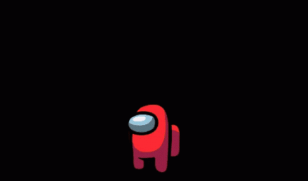
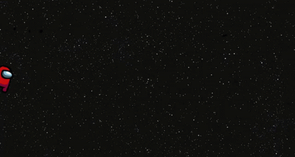
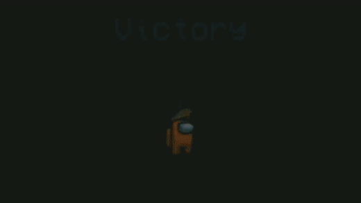
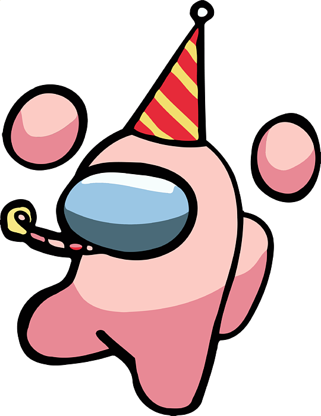
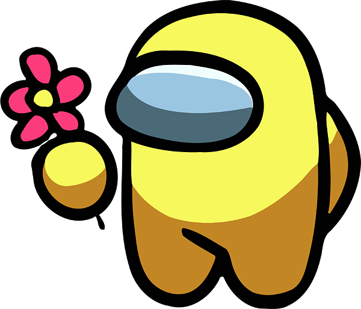

Among Us es un juego multijugador en línea de deducción social, desarrollado por Innersloth. Se juega entre 4 y 15 jugadores, quienes asumen el rol de tripulantes o impostores en una nave espacial o una base. Los tripulantes deben completar tareas para mantener la nave funcionando, mientras que los impostores intentan sabotear y eliminar a los tripulantes sin ser descubiertos.

Reglas
- tripulantes
- Deben completar todas las tareas asignadas en el mapa (reparar cables, descargar datos,etc.).
- Pueden convocar reuniones de emergencia para discutir y votar quién podría ser el impostor.
- Ganan si completan todas las tares o si descubren y expulsan a todos los impostores.
- impostor
-

- Su objetivo es sabotear la nave y eliminar a los tripulantes sin ser descubiertos.
- Pueden sabotear varias partes de la nave (luces, oxígeno, reactores, etc.) para crear confución y ganar tiempo.
- Pueden usar ventanillas para poder moverse rápidamente por el mapa, evitando ser vistos.
- Ganan si logran eliminar a suficientes tripulantes (que no puedan cumplir sus tareas) o si sabotean el sistema y no logran repararlo a tiempo.
Mecánicas Principales
- Tareas:
- Deben completar todas las tareas asignadas por el mapa(reparar cables, descargar datos,etc.).
- Sabotaje:
- Los impostores pueden sabotear el sistema (luces,oxígeno,puertas) para raleantizar a los tripulantes o separarlos.
- Los tripulantes deben reparar rápidamente los cables de sabotajes para evitar su derrota.
- Reportar un cuerpo:
- Cuando un tripulante encuentra un cadáver, puede reportarlo.Esto inicia una reunion de emergencia donde los jugadores discunten quién podría ser el impostor.
- votaciones:
-

- Durante las reuniones, los jugadores podran discutir y votar en quién creen que es el impostor. Pueden optar por votar a alguien para expulsarlo de la nave o saltar la votacióm si no están seguros.
- Si se vota a alguien, esa persona es expulsada de la nave, Y si era impostor, los tripulantes estarán más, cerca de ganar.

- Reunión de emergencia:
- Cualquier jugador puede convocar una reunión de emergencia en la nave para discutir comportamientos sospechosos y votar a un posible impostor.
Condiciones de Victoria
- tripulantes
-

- Completar todas las tareas asignadas o expulsar a todos los impostores mediante las votaciones.


- impostor
- Eliminar a la mayoría de tripulantes (haciendo que el númro de impostores sea iugal o mayor que el de los tripulantes), o ganar mediante sabotajes exitoso.